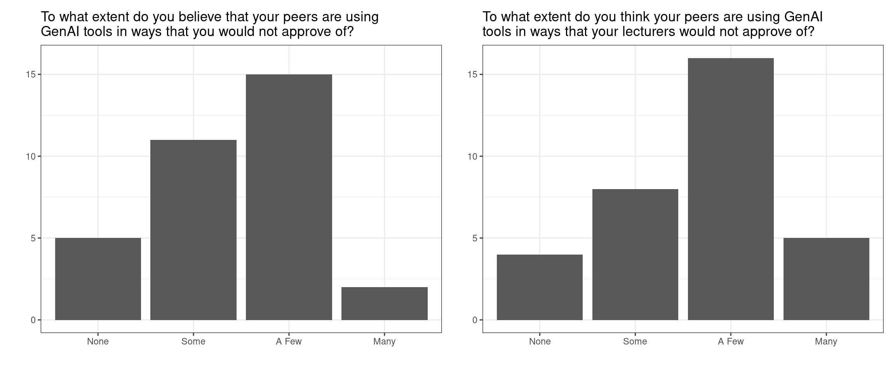
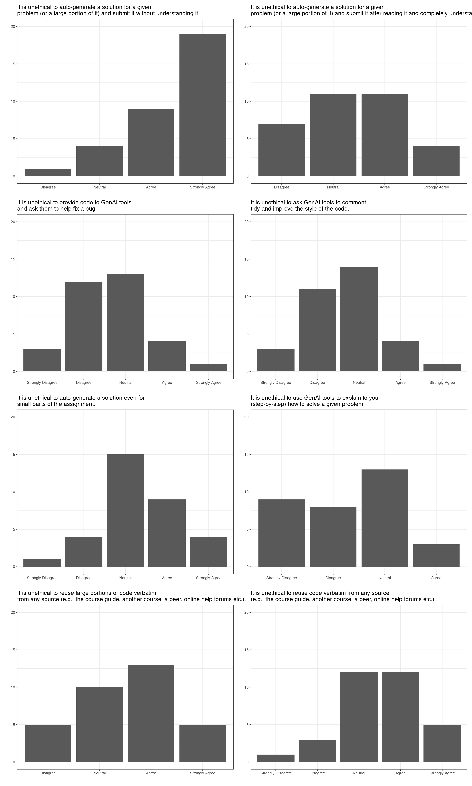

All BIOSCI 738 lectures require your active involvement! See the course policies for further infomation.
Throughout this runsheet you’ll find a number of different callout boxes:
this box will contain the expected learning objectives and/or outcomes for the material
this box will contain some useful information
this box will ask you discuss/write/sketch an answer within your randomly allocated group
First things first…
Note the randomly allocated group mentioned above. Each lecture I’ll have run the following R code that randomly allocates you into groups. It’s your responsibility to get into them, just look for the cows!
A runner, responsible for running (or at least getting the next instruction from Charlotte)
A coder, responsible for implementing the code for the group this does NOT mean the sole coder, rather the person responsible for running any suggested code etc.
A timekeeper, responsible for managing time for the group, making sure you stay on track
A facilitator, responsible for seeking out opinions from all group members and ensuring that everyone has the opportunity to contribute
In your groups quickly determine who is filling what role by order of next birthdays: the person with the next birthday will be the runner, the next birthday after that will be the coder, the third birthday will be timekeeper, and if your group has four members, the fourth member will be the facilitator.
Once you have allocated group roles your runner should come to me to retrieve the first instruction.
Group Code of Conduct
A classwide agreed group working Code of Conduct
Upon the completion of this activity I will summarise the main themes/suggestions from Section 3.2 (that I deem appropriate). This will become the class-agreed group working Code of Conduct that you are expected to adhere to during each activity.
Why I think this is important
As a student of University of Auckland student, you are responsible for understanding and abiding by the requirements of the Student Charter.
A Code of Conduct is not just a strange thing the university make you sign. They are a large part of many professional and research-focused bodies beyond university. The following lists just a few examples of societies or institutes you will likely come across during a biostats career in NZ.
Upon the completion of this activity I will summarise the main themes/suggestions from Section 5.2 (that I deem appropriate). This will become the class-agreed group working Code of Conduct that you are expected to adhere to during each activity.
Who’s heard of bullshit?
Recently, there has been considerable interest in large language models: machine learning systems which produce human-like text and dialogue. Applications of these systems have been plagued by persistent inaccuracies in their output; these are often called “AI hallucinations”. We argue that these falsehoods, and the overall activity of large language models, is better understood as bullshit in the sense explored by Frankfurt (On Bullshit, Princeton, 2005): the models are in an important way indifferent to the truth of their outputs
This is an excerpt from the abstract of Hicks, Humphries, and Slater (2024).
If a student is confused about a concept, they can sit with ChatGPT and it will talk to them for hours about that particular concept.
It is a really great tool to create code but also a really great tool to prevent yourself from learning.
It’s teachers’ responsibility to motivate them and make such a problem that [students] are keen to solve and in a way that they actually would like to learn something and realize that they need these skills also in the future.
…there have always been so many ways of cheating, but I don’t think I’ve ever been aware of such an obvious, cheap, and easy way of cheating. Students can get [an AI tool] to answer any question I can ask them at the moment and therefore I have lost my ability to confidently assess any work that students hand in.
I think we need different kinds of professionals with different understandings of computing. Some need to be very deeply involved with how our programming languages work … others might only need some kind of overall understanding. They are not programmers by themselves, but they still should understand how software is produced.
All the above are quotes garnered in Sheard et al. (2024).
Remember back to last week when I asked you to complete a pre-course quiz or two? Below are a summary of your responses to the genAI related questions. These questions were, by design, worded in the same way those in Prather et al. (2023) (see Figure 3 of that paper for a summary of their findings).
A summary of your responses

For programming assignments, I believe GenAI should be…
Answer
Freq
Allowed/Disallowed
28
Always allowed
3
Always disallowed
2

Abbr
Question
A 6
It is unethical to auto-generate a solution for a given problem (or a large portion of it) and submit it without understanding it.
A 7
It is unethical to auto-generate a solution for a given problem (or a large portion of it) and submit it after reading it and completely understanding it.
A 8
It is unethical to provide code to GenAI tools and ask them to help fix a bug.
A 9
It is unethical to ask GenAI tools to comment, tidy and improve the style of the code.
A 10
It is unethical to auto-generate a solution even for small parts of the assignment.
A 11
It is unethical to use GenAI tools to explain to you (step-by-step) how to solve a given problem.
A 12
It is unethical to reuse large portions of code verbatim from any source (e.g., the course guide, another course, a peer, online help forums etc.).
A 13
It is unethical to reuse code verbatim from any source (e.g., the course guide, another course, a peer, online help forums etc.).
Do you have anything else that you’d to mention about your experiences with GenAI tools? (the theme of your responses)
[TODO]
Some specific answers I particularly liked or wanted to discuss
In my opinion, the controversy behind LLMs and other AIs is rather blown out of proportion, if people use it to do all their assignments for them it should be EASILY detectable for any marker/instructor…
I’m getting increasingly concerned by assignments at uni with the basic premise of “get chatgpt to generate this, then do [whatever is relevant for the assignment which is almost never critiquing the output]”…
I don’t enjoy the increasing prevalence and reliance on AI in academic settings and in day to day life due the large environmental impacts and blurry ethics…
GenAI’s kinda like a double-edged sword for jobs…AI’s the shortcut, but my brain’s still the GPS!
I have been using Grammarly (to my understanding, it’s also a generative AI),…
I’m worried that non-native English speakers using translation tools might be identified as AI…
Share and discuss
Discuss in your group how much you agree/disagree with the opinions and summaries presented above.
If you are comfortable doing so you may wish to share some of your personal experiences. Feel free to expand on the answers you gave in the pre-course quiz.
As a group discuss and write down your expectations of yourself and each other with regards to use of GenAI for classroom activities, and assignment activities. You may want to think about
how to ensure GenAI tools are use for the benefit of everyone’s learning, or
what your expectations are of your peers who use gen AI are.
Q&A and peer-share
Share your approach to the diagnostic coding task
Each of you who submitted a script for the diagnostic coding task should have now seen my solution to it! This is not the only solution! Please share your approach with others, especially if you got stuck in a few places! Sharing and talking things through will make things clearer. Trust me! 😉
Prather, James, Paul Denny, Juho Leinonen, Brett A. Becker, Ibrahim Albluwi, Michelle Craig, Hieke Keuning, et al. 2023. “The Robots Are Here: Navigating the Generative AI Revolution in Computing Education.” In. New York, NY, USA: Association for Computing Machinery. https://doi.org/10.1145/3623762.3633499.
Sheard, Judy, Paul Denny, Arto Hellas, Juho Leinonen, Lauri Malmi, and Simon. 2024. “Instructor Perceptions of AI Code Generation Tools - a Multi-Institutional Interview Study.” In. New York, NY, USA: Association for Computing Machinery. https://doi.org/10.1145/3626252.3630880.